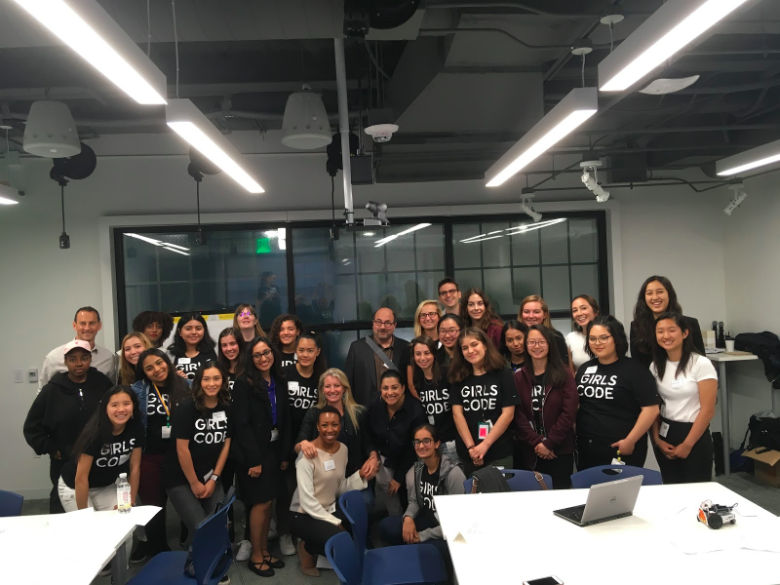
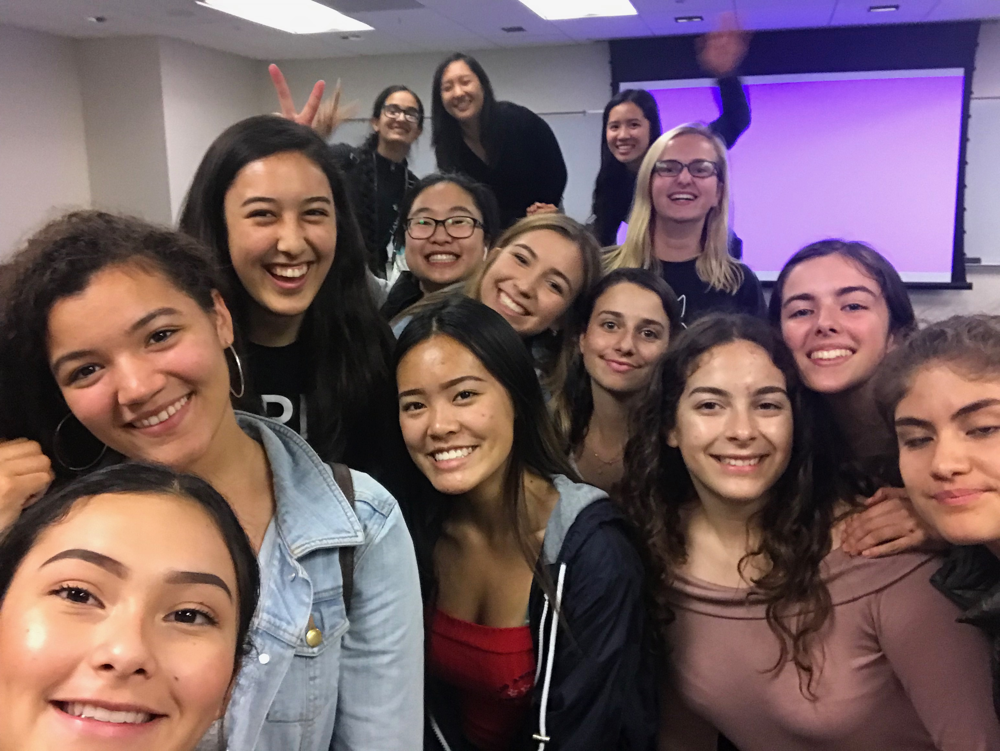
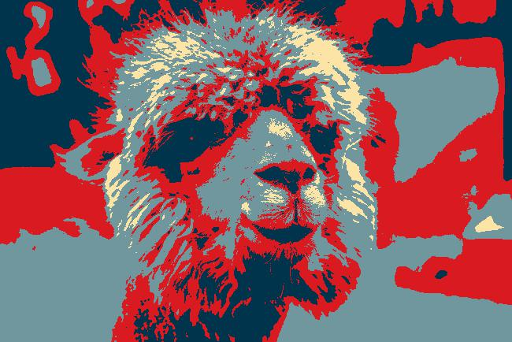
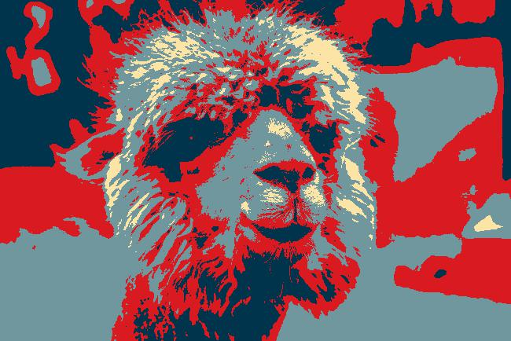
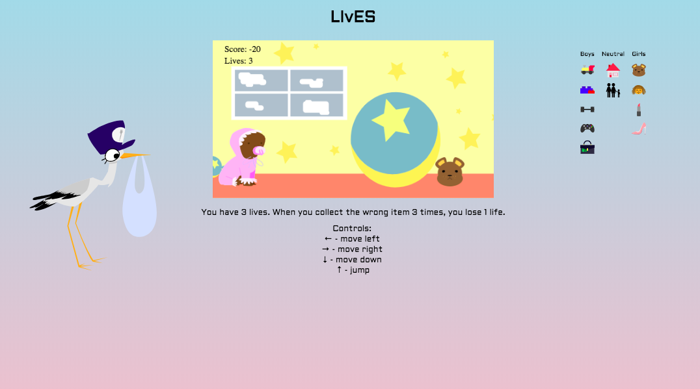

1 / 3

Here Kitty Kitty BoEbot
2 / 3

Google Fieldtrip
2 / 3

End of the Program!
Girls Who Code is a non-profit organization that focuses on empowering young girls and closing the gender gap in the Tech field. They created
many programs to help fulfill their goal. One of those programs is the Summer Immersion Program (SIP). For seven weeks, a group of 20 girls goes to
a commany that hosts the program and learns about coding, courage, and sisterhood. My SIP took place at Moody's Analytics in San Francisco. Each week,
we either learned about a new topic or a new language. We made around one project a day and went through a total of three programming languages. We were also
able to attend a bunch of fieldtrips like Twitch, Google, Paypal, and Autodesk. In addition to all of this, we were assigned a mentor from the host company
and we met with them every Tuesday.
What proved to be most rewarding was meeting people. Not only was I able to meet a lot of girls from diverse backgrounds
and skill levels, I was also able to meet a lot of the people who were in the field already. I learned so much from listening to their experiences; I learned
that your career is not set in stone- often times, many of the speakers had switched majors at least once. I also learned that we should take risks and live
life with an open mind. When I joined the SIP, I was only thinking about the technical things I would learn. I didn't realize that what would be most rewarding
was the life lessons I would gain along the way.
(press the green flag in the top right handcorner to start)
In this project, we experimented with the basics of Scratch so that we could familiarize ourselves with the basic blocks. We learned how to change sprites,
move to different coordinates, spin, have dialogue, and have conditionals. In my project, I had a conditonal that made the sprite keep moving forward until
it came in contact with another sprite. Not only was this a great way to introduce us to Scratch, but it was also an interesting method of helping us get to
know the other girls in the program.
(press the green flag in the top right handcorner to start)
In this project, we continued to look at different fundamental building blocks of coding: loops, conditionals, variables, and functions.
I created many variables that were booleans so that I could check that a certain action had taken place. Once that action took place, the boolean would
switch to true and it would prompt another action from another script. We also used input and ouput- in my project, the dinosaur asked for the users name so that
the dinosaur could greet the person. There were also functions that could compare input- in my animation, the program would prompt the user to grade the two competitors
dance move and choose a winner based on which character had a higher score.
(press the green flag in the top right handcorner to start)
This game applied what we had learned throughout the week into one project. We learned about designing a game, prototyping, wireframing and developing. We also learned
about the basics of games such as the win-condition, collision detection, movement controls, levels, game flow, and lose conditions. I was really proud of this game because not
only did I create a game that had a mission (collect the book and return to owner), but I also made it possible for the user/player to choose their own character. In addition, I payed
close attention to the small details. For example, as the character walked down the street, I made sure that the sprite would gradually get smaller, just as people get smaller as they walk away.
In addition, when the player hovers over the arrow button, the button gets bigger.
(press the green flag in the top right handcorner to start)
This project was a group project and I learned so much about group programming. We had to find a way to efficiently break down all the tasks in a fair way. In addition, we had to
learn how to let others speak up while also knowing when to step up ourselves. In the game itself, we used a lot of conditional statements so that the program would know when the player
hit the edges of the maze, when they picked up an item, or when they reached the end.
To get comfortable with python, we transformed our Scratch choose your adventure game to a python text-based version. We used atom to create our python files and used the command line to execute them. We used a lot of conditionals to naviage the game. In addition, I decided to challenge myself, so I decided to try to make an option to keep playing the game until the user wanted to stop. This required using a "while statement". We also learned about inputs and ouputs in Python so that the user could enter the name.
In this project, we learned about lists and how data and numbers are stored in arrays. Specifically, we looked at how to find certain indexes in an list, lengths of lists, or finding certain values in a list. We used all these skills to make a hangman game. This was extremely difficult for me because I originally used an array of words instead of a list. As a result, there were some functions that I couldn't use. For example, I was not allowed to change one single letter in an array, but I could do that in a list. As a result, for the longest time, I couldn't find a way to update the empty word to reveal the right letters. I had to ask the TA's for help but I eventually found out what was wrong using the internet. In addition, I wanted to push myself even more, so I decided to draw out the hangman using back-slashes, forward-slashes, lines, and O's. I then used a variable to keep track of how many letters the user had gotten wrong so that I could display the right drawing of the hangman.
We began to learn more about functions in Python by making a Chatbot. We mainly just practiced making functions, but I wanted to challenge myself so I tried to add as many features to the chatbox as I could. It wasn't too challenging because I used a lot of the code from previous projects we've done (like the hangman project, choose your own adventure game, and random number guesser game), but I also added new games like a rock-paper-scizzors (where the computer randomly generates a number from 0 to 2 that corresponds with rock, paper, or scizzor), a random poem generator, a random ascii art generator, random name generator, and random meal generator. I also made it so that that it would keep asking the user for an input until the user wanted to leave the chatbox. In addition, they can ask the chatbot to explain what functions it can do.
 

To practice using libraries, we made a program that would take an image, apply a filter to it, return the image, and save it. We had to use the Pillow library to open and save files. We also had to use the math library to do computations. The way the Obamicon filter worked was that it would check how similar colors would be and if they were within a certain range of brightness, it would assign it one color (change the RGB value). I also decided to challenge myself by making more filters. These included a greyscale filter that changed the RGB values so it would be grey rather than have color. I also decided to make an inverted filter which took the RGB values and replaced it with the value of 255 minus the original RGB values. I also decided to make tints by increasing the values of R, G, or B. I also decided to make a contrast filter by decreasing certain values of the RGB while increasing others.
Morse Code Project
On the first day of the Robotics Week, we learned about the basics of Arduino and circuits. For the hardware, we learned about the difference between digital and analog, how circuit boards work, short circuits, open circuits, resistors, and LEDS. For the programming language, we learned about how Arduino differed from Python, how to define variables and create functions. Using what we learned, we created a circuit board that would turn on and flash a LED based on the program we ran. We used the build-in function, delay, to create the dashes and the dots. From there, we created the different letters based on the morse code.
Code for Morse Code Project:
int ledPin = 7;
void setup() {
// put your setup code here, to run once:
pinMode(lenPin, OUTPUT);
}
void loop() {
// put your main code here, to run repeatedly:
S();
O();
P();
H();
Y();
}
void dot(){
digitalWrite(ledPin, LOW);
delay(500);
digitalWrite(ledPin, HIGH);
delay(250);
digitalWrite(ledPin, LOW);
}
void dash(){
digitalWrite(ledPin, LOW);
delay(500);
digitalWrite(ledPin, HIGH);
delay(500);
digitalWrite(ledPin, LOW);
}
void S(){
dot();
dot();
dot();
delay(1000);
}
void O(){
dash();
dash();
dash();
delay(1000);
}
void P(){
dot();
dash();
dash();
dot();
delay(1000);
}
void H(){
dot();
dot();
dot();
dot();
delay(1000);
}
void Y(){
dash();
dot();
dash();
dash();
delay(1000);
}
Here Kitty Kitty Project
Our site didn't follow the curriculum for Week 3: Robotics. In the planned our curriculum, we were expected to make a program everyday from Tuesday to Friday. Instead, our site split us into groups and each group did the project of one day. The reason for this change was because we had to present our projects to the board of Girls Who Code. Our site was chosen out of all the other classes. To make sure that we finished each project, each group was only allowed to do one project. Our group did the Here Kitty Kitty project. In this project, we used Arduino and the BoEbot to create a robot that used sensors to react to its surroundings. We originally wanted to use a piezo, but we later found out that it was only an ouput. As a result, we ended up using a phototransistor (which senses brightness of light) to create a robot that started to move when a bright light shone on it. If the brightness exceeds a certain level, the servos (which are the motors of the robot) will make the robot move forward until the brightness goes beyong the threshold.
Code for Here Kitty Kitty Project:
#include
Servo servoLeft;
int Piezo = A0;
int SensorReading = 0;
int num = 10;
void moveKitty() {
servoRight.writeMicroseconds(1700);
servoLeft.writeMicroseconds(1300);
}
void stopKitty() {
servoRight.writeMicroseconds(1500);
servoLeft.writeMicroseconds(1500);
//delay(1000);
}
void setup() {
// put your setup code here, to run once:
servoRight.attach(13);
servoLeft.attach(12);
pinMode(Piezo, INPUT);
stopKitty();
Serial.begin(9600);
}
void loop() {
// put your main code here, to run repeatedly:
SensorReading = analogRead(Piezo);
Serial.println(SensorReading);
if(SensorReading <= num){
moveKitty();
Serial.print("You pet me!");
delay(1000);
}
stopKitty();
delay(100);
}
The Portfolio Website
This website itself is just a continuation of a website I started during this week. For our introduction to html and css, we were prompted to make a portfolio or a website about something we were passionate about. The original website looked nothing like this one, but it had similar naviagtions and pages. We learned about tags, attributes, headers, paragraphs, embedding and importing images and links. For the css, we learned about changing the background color, text color, text size, margins, paddings, and floating. We also did a little bit of Javascript. I decided to have a button that would run programs; for example, the test button changes the background color and text color.
The Client Website
We also had to practice making websites for a client. My client wanted me to make a website about kpop because she really enoys listening to it. We used all the tools and knowlege of html, css, and javascript to create this website. Not only were we able to practice our web design and programming skills, we were also able to experience what it is like to have a client. We learned how important it is to remember that what we are making is not for ourselves, but for someone else. As a result, it was super important to have good communication with our clients so that they would be satisfied with our finished project.
Twitter Data
We analyzed a dataset of Tweets (not-real) from Twitter using Python. The data was in the form of a json and we used our knowledge of Python, loops, and lists to print out certain data based on what we wanted. We also created a text-blob using Python and the Textblob library. A textblob is basically a computer generated image of arranged words that are sized differently based on how many times it shows up.
Code for Text-Blob:
# cmd line set-up: python -m textblob.download_corpora #
import json
from textblob import TextBlob
import matplotlib.pyplot as plt
from wordcloud import WordCloud
tweetFile = open("tweets.json", "r")
tweetData = json.load(tweetFile)
tweetFile.close()
########textBlob######
combinedTweets = ""
for tweet in tweetData:
combinedTweets += tweet["text"]
tweetblob = TextBlob(combinedTweets)
#filter our more words
tweetSearch = "automation"
wordToFilter = ["the", "like", "you", "thing", "https", "will", "could", "about", "and", "but", "hi", tweetSearch]
filteredDictionary = dict() #make empty dictionary
for word in tweetblob.words:
#skip short words
if len(word) <= 2:
continue
#skip words with random chars and int
if not word.isalpha():
continue
if len(word) <= 5:
continue;
#skip words in filter list
if word.lower() in wordToFilter:
continue
filteredDictionary[word.lower()] = tweetblob.word_counts[word.lower()]
#creaate word Cloud
wordcloud = WordCloud().generate_from_frequencies(filteredDictionary)
plt.imshow(wordcloud, interpolation = "bilinear")
plt.axis("off")
plt.show()
Code for Dictionary Attack:
f = open("dictionary.txt","r")
print("Can your password survive a dictionary attack?")
#Take input from the keyboard, storing in the variable test_password
#NOTE - You will have to use .strip() to strip whitespace and newlines from the file and passwords
test_password = input("Type in a trial password: ").lower()
while "2018" in test_password:
print("You can't have this year in your password")
test_password = input("Type in another password: ")
matched = True
while matched == True:
match = 0
word = ""
for line in f:
if line.strip() == "abacot":
break
match2 = 0
for i in range(len(test_password)):
if test_password[i] == line[i]:
match2 += 1
continue
else:
break
if match2 > match:
word = line
match = match2
print(match)
print(word)
if match/len(test_password) > .6:
print("this is too similar")
test_password = input("Type in another password: ")
else:
matched == False
weak = 1
while weak == 1:
for line in f:
if test_password not in line:
weak = 0
else:
weak = 1
break
if weak == 0:
break
elif weak == 1:
print("Too easy")
test_password = input("Type in another password: ")
if weak == 0:
print("This works")
f.close()
Dictionary Attack
To practice finding or filtering data, we created a Python program that would run through the whole dataset and check if a word existed in the data or not. In this case, we had the user input a password and we checked if the password was a word in the dictionary. We had to check that it had enough letters and if it had the current year in it. I tried to push myself by changing the program so that it could check if a word was similar. For example, "He110" is similar to "Hello." Unfortunately, I couldn't make it work. Nonethless, I was quite proud of this project because I was one of the first students to finish the basic code (to check if it existed in the dataset) and I didn't need help from the TA's or the internet.
Data Scientist For A Day
To practice everything we had learned from the previous projects, we were put into pairs and allowed to analyze any of the given datasets. My partner and I decided to analyze the weather dataset. We also decided to make a text blob based on which city had the most storms. We calculated the average temperature of the dataset, the highest temperature, and the location of the hottest temperature. Those were quite easy to do because it was similar to what we had done before. For the text blob, we had a lot of issues because everytime it made the textblob, it would print the certain words backwards because. For example, instead of printing "New York", it would print "York New". We later found out that it was because the space in between the words were throwing it off. As a result, we had to create a function that replaced every space with a hyphen. After we did that, it succeeded in making the textblob.
Code for Data Scientist For a Day:
import json
from textblob import TextBlob
import matplotlib.pyplot as plt
from wordcloud import WordCloud
weatherFile = open("weather.json", "r")
weatherData = json.load(weatherFile)
weatherFile.close()
temp = []
for avg in weatherData:
temp.append(avg["Data"]["Temperature"]["Average"])
print("average temperature: " , sum(temp)/len(temp)) #prints average, sum of all in list/ length of list
hottest = 0
hottestlocation = ""
for temp in weatherData:
if temp["Data"]["Temperature"]["Maximum"] > hottest:
hottest = temp["Data"]["Temperature"]["Maximum"]
if (" " in temp["Station"]["City"]):
location= temp["Station"]["City"]
index= location.index(" ")
location= location[:index] + "-" + location[index+1:]
hottestlocation = temp["Station"]["City"]
else:
hottestlocation = temp["Station"]["City"]
print("hottest temperature: ", hottest)
print("hottest location: ", hottestlocation)
combinedLocations = ""
for loc in weatherData:
if (" " in loc["Station"]["State"]):
location= loc["Station"]["State"]
index= location.index(" ")
location= location[:index] + "-" + location[index+1:]
combinedLocations += location + " "
else:
combinedLocations += loc["Station"]["State"] + " "
Locblob = TextBlob(combinedLocations)
filteredDictionary = dict() #make empty dictionary
for word in Locblob.words:
filteredDictionary[word.lower()] = Locblob.word_counts[word.lower()]
#creaate word Cloud
wordcloud = WordCloud().generate_from_frequencies(filteredDictionary)
plt.imshow(wordcloud, interpolation = "bilinear")
plt.axis("off")
plt.show()
The Final Project: LIvES
 For our final projects, we were required to work in groups of 3-4 to create a website, app or game that would benefit the community. We decided to make a game using HTML, CSS, and Javascript. In our group, we had a
main designer, main Javascript programmer, and 2 main HTML programmers. I was in charge of making the Javascript. For our game, we wanted to tackle the issue about how society places stereotypes on people based on their biological
sex. For example, parents often buy trains and action figures for boys. On the other hand, parents buy dolls and stuffed animals for girls. As teens, boys are expected to be tough and pursue hobbies like gaming and sports. At the same time,
girls are expected to care about makeup and fashion. As adults, men are seen as the main providers and protectors of the family while women are seen as the caretakers of the household.
To reveal the absurdity of these steretypes, we created an infinte
2-d game that went through three stages of life: baby, teen, and adult. We chose to name the game, "LIvES", because it aims to reflect a lot of the trends and patterns that are seen in real life. Also, we made the "v" smaller because
we wanted to show how many of the things society tells us are "LIES". For example, girls can't like sports. When the player starts the game, they are randomly given a character (male or female, skin color, and hair color), reflecting how in real life,
people can't choose their biological sex, skin color, or hair color. To gain points, the player must collect things that society deems as acceptable, just as people must follow society's rules to succeed in life.
When the player reaches a certain number of points, they are allowed to continue in the next stage of life. If they collect the wrong item 3 times, they lose 1 life, and when they lose 3 lives, the game ends,
just as people are set back when they don't follow what society says. In addition, we changed the scoring system so that the boys are allowed to collect more things, reflecting
how in real life, boys are given an advantage simply because of their sex. Once the player finishes the adult stage, they complete one generation and are sent back to the baby
stage. We chose to make this game infinite because it reflects how this cycle will keep repeating if there are no changes. In addition, to make the game harder, everytime the player completes a generation, the game speeds up.